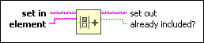
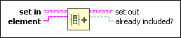

Insert Into Set Function
Owning Palette: Set VIs and Functions
Requires: Base Development System
Inserts an element into a set.

 Add to the block diagram Add to the block diagram |
 Find on the palette Find on the palette |
Owning Palette: Set VIs and Functions
Requires: Base Development System
Inserts an element into a set.

| Add to the block diagram |
Find on the palette |
Refer to the following VIs for examples of using the Insert Into Set function:
 Open example Find related examples
Open example Find related examples
Open example Find related examples